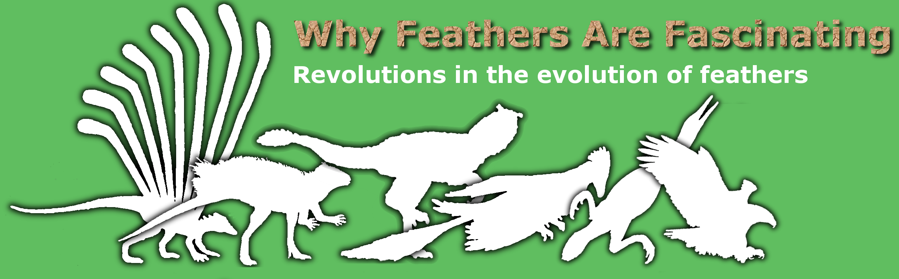
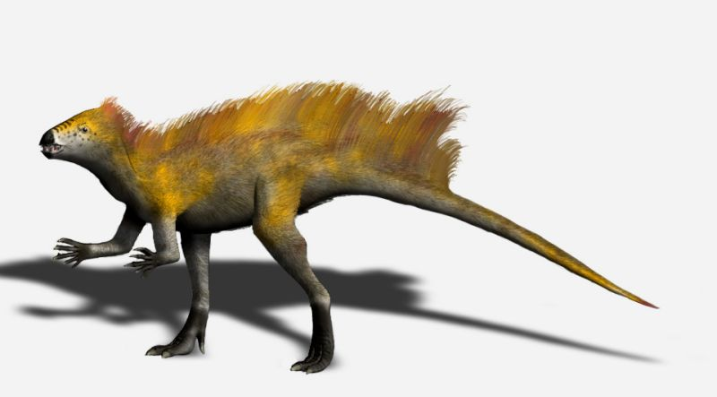
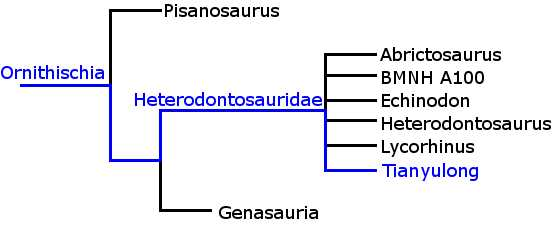

|  | |
| Tianyulong |
|
| Home Unravelling the Evidence Specimens: |
Name: Tianyulong confuciusi Age: ~125 million years Size: ~70cm subadult Described in 2009, Tianyulong is a curiosity for two reasons. It belongs to the Heterodontosauridae, a basal group of Ornithischian dinosaurs that diverged early in dinosaur history (~200 million years ago), yet Tianyulong lived around 70 million years later. Previous Heterodontosaurid specimens were found in Africa, yet this specimen was found in the Liaoning province of China. The Liaoning province is famous for its exceptional preservation of dinosaurs and has been at the forefront of many areas of research including the discovery of many species of feathered dinosaur. This is the second curiosity - Tianyulong was discovered with evidence of a downy coat. There are plenty of other dinosaurs with such coats, but these are all Saurischian dinosaurs. Tianyulong is an Ornithiscian, separated from Saurischians by around 100 million years of evolution (based on the age of Pisanosaurus - the basal Ornithiscian). Some may claim that this implies the common ancestor, 100 million years before, possessed downy feathers. But a simpler explanation is that the capability to produce feather structures is a more ancient trait than once thought; this explanation might even help explain the structures found on Longisquama, if more ancient reptiles were able to produce feathers but rarely did so. This may seem farfetched, but the presence of downy feathers in Ornithischia has another implication. Downy feathers are thought to be grown only by organisms that need insulation, i.e. warm blooded organisms, such as modern birds. Downy isulation reduces heat loss, so the animal needs to generate less, and this insulation would only hinder a cold blooded animal as it would take longer to absorb heat from the Sun. It was little surprise to find these feathers in ancient but close relatives of birds, and since then downy feathers have been found in slightly more distantly related dinosaurs, leading palaeontologists to label these as also warm blooded. But for a long time Ornithischians were thought to be cold blooded, until the discovery of insulation feathers within this group. If both Ornithischians and Saurischians had warm blooded members, does this mean that all dinosaurs were warm blooded, or just that it could readily evolve as feathers might have been able to? It follows that feathers could be readily developed long before the dinosaurs, but that this rarely happened because the right conditions were not often present. But with warm bloodedness came and increased pressure for feathers to develop, as we see here. There is of course opposition to such radical changes in the field, and only time and more discoveries will tell whether these feathers really are as significant as some would believe. References: Lingham-Soliar, T., 2010. Dinosaur protofeathers: pushing back the origin of feathers into the Middle Triassic? Journal of Ornithology, 151(1), pp.193–200. Witmer, L.M., 2009. Dinosaurs: Fuzzy origins for feathers. Nature, 458(7236), pp.293-295. Zheng, X.T. et al., 2009. An Early Cretaceous heterodontosaurid dinosaur with filamentous integumentary structures. Nature, 458(7236), pp.333-336. Image Credit: Tamura, N., 2009. Tianyulong BW.jpg. Wikimedia Commons. Available at: http://commons.wikimedia.org/wiki/File:Tianyulong_BW.jpg [Accessed December 11, 2010].
|
{kind=link}
{kind=link}